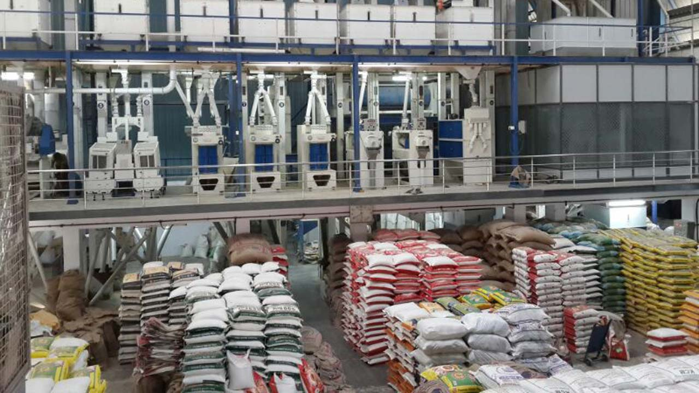

Maa Laxmi traders Food Suppliers
Aurahi, 09 Mahottari
"Your Trusted Partner for Fresh and Premium Quality Food Products"
Welcome to Maa Laxmi Traders!

|  | Maa Laxmi traders millFounded in 2004, Maa laxmi Traders has become a leading name in the food supply industry. We specialize in providing High quality grains, pulses, species, and packaged food products to wholesalers, retailers,and food business.Our dedication to quality and timely delivery has helped us to build long-lasting relationship with our clients. At maa laxmi traders, We pride ourselves on being a reliable supplier, offering fresh, healthy,and sustainable food products. We work closely with our farmers and trusted suppliers to ensure that all our products meet the highest standards of quality.we understand the importance of healthy and fresh food, which is why we focus on providing sustainable and premium-quality products. Our range includes essential staples like rice, lentils, and spices, as well as health-conscious options like organic grains and pulses, catering to the evolving preferences of modern consumers. |
1.High Quality products:
The company is committed to providing fresh, high-quality grains, pulses, spices, and packaged foods that meet strict standards.
2.Reliability:
Built a reputation for timely and consistent delivery, making it a trusted partner for businesses and retailers.
3.Sustanibility
The company works closely with farmers and suppliers to promote sustainable practices, ensuring the highest quality products while supporting the environment.
4.Competitive pricing:
Despite offering premium-quality products, Maa Laxmi Traders ensures competitive pricing, making it a cost-effective choice for customers.
5.Experience and reputation:
With years of experience in the food supply industry, Maa Laxmi Traders understands the needs of the market and has built a solid reputation for excellence.
6.Customer priority attitudes:
With a focus on long-term relationships, Maa Laxmi Traders prioritizes customer satisfaction and is dedicated to adapting to market demands.